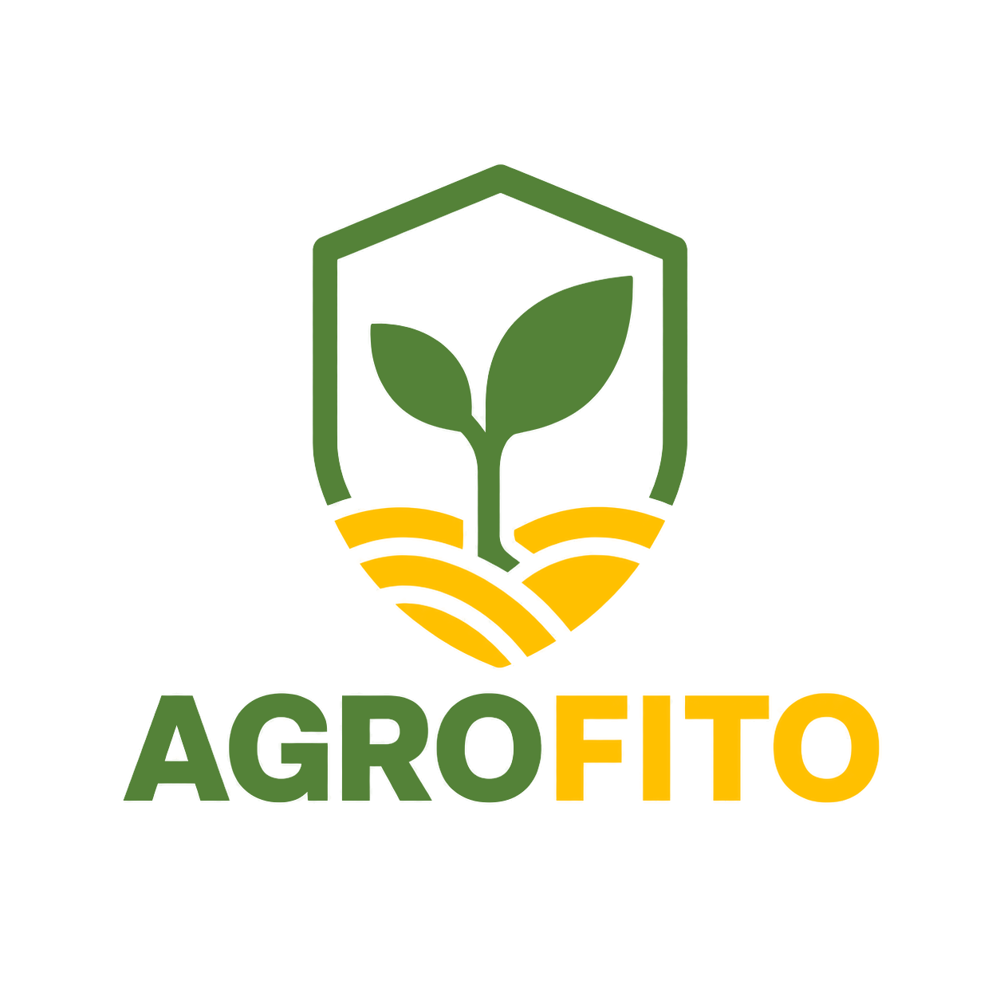
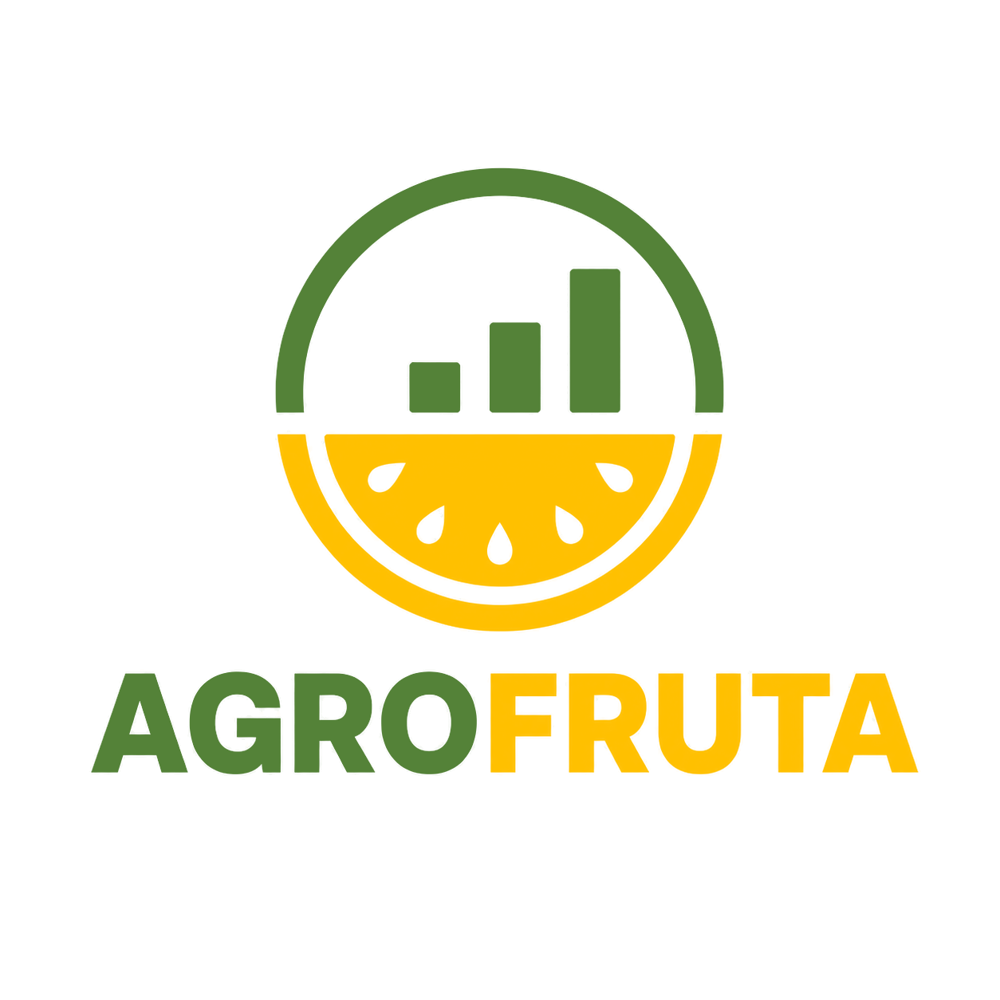
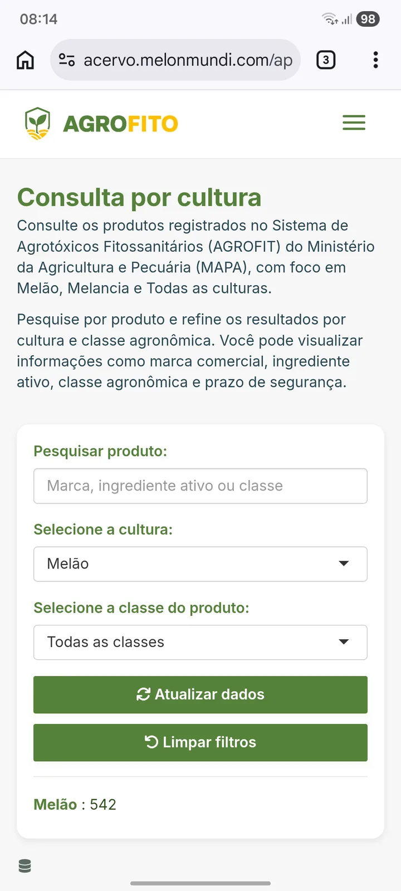
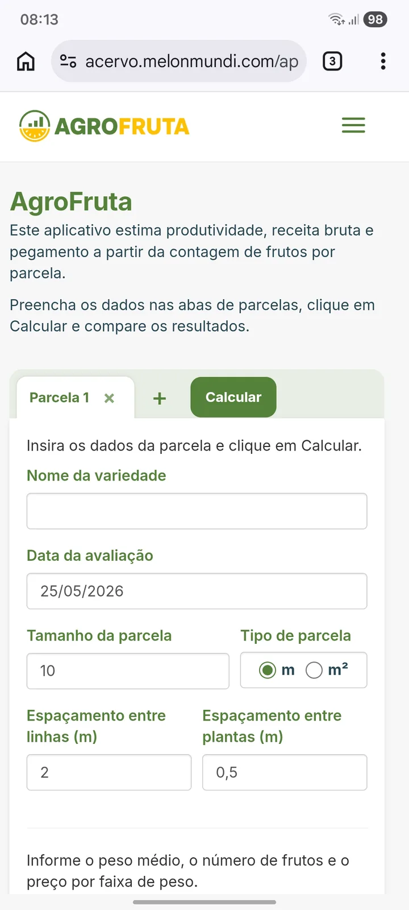
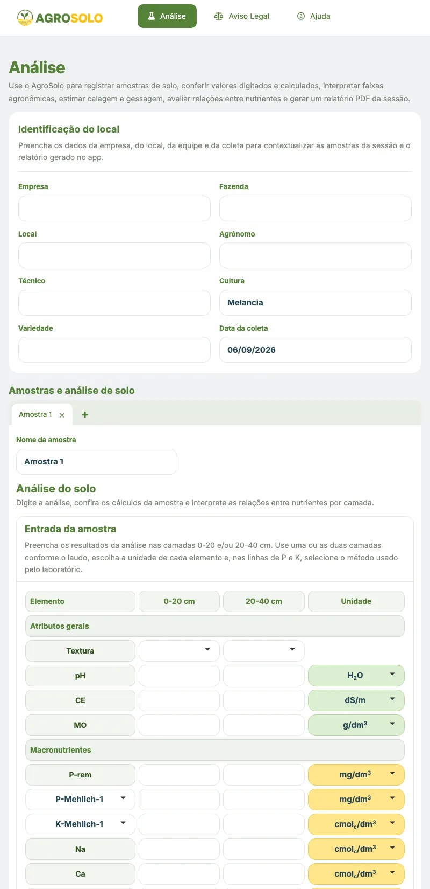
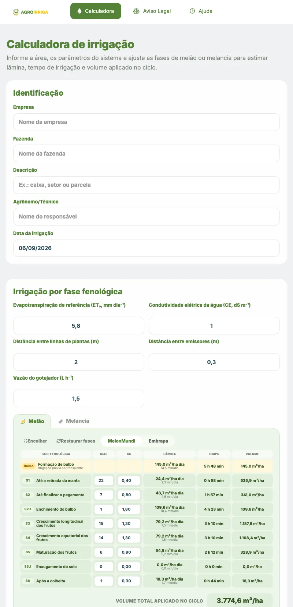

Biblioteca
Artigos técnicos, protocolos de manejo e fichas de campo organizados por tema, com busca e filtros por cultura e palavra-chave.
Bem-vindo à MelonMundi
Somos um grupo multidisciplinar com dedicação exclusiva às cucurbitáceas. Assessoramos do planejamento da fazenda ao transporte do produto — e reunimos todo esse conhecimento em um acervo digital com biblioteca técnica, simuladores, cursos e aplicativos.
Tudo em um só lugar
Um login único abre a porta para conteúdo técnico, ferramentas de cálculo, formação e aplicativos — todos construídos a partir da nossa experiência de campo em cucurbitáceas.
Artigos técnicos, protocolos de manejo e fichas de campo organizados por tema, com busca e filtros por cultura e palavra-chave.
Ferramentas on-line para consultar, calcular e simular cenários: fitossanidade, produtividade, solo e irrigação.
Formação prática que começa na teoria e termina em decisão escrita, com atividades de campo em áreas comerciais.
Programas instaláveis no computador ou no celular, pensados para registrar informações e apoiar o trabalho técnico no campo.
Dashboards e indicadores que consolidam informações autorizadas e transformam dados de campo em apoio à decisão.
Emissão de certificados após a validação das atividades práticas pela equipe técnica — não apenas pela presença.
Conhecimento organizado
Conteúdo produzido e revisado por quem está no campo, estruturado em três formatos que se complementam: o artigo explica, o protocolo padroniza e a ficha vai para a mão do avaliador.
Textos aprofundados sobre fitossanidade, distúrbios fisiológicos e manejo, com imagens de campo e referências.
Procedimentos MIPD em três níveis, com versões específicas para melão e para melancia, do reconhecimento em campo ao uso do simulador.
Resumos derivados dos protocolos, prontos para impressão e consulta rápida durante a avaliação na área.
Conteúdo disponível para usuários autenticados no Acervo MelonMundi.
Contas e decisões em minutos
Rodam direto no navegador, no computador ou no celular. Os dados informados são temporários: nada permanece armazenado depois que a sessão é encerrada.

Consulta de produtos fitossanitários registrados no AGROFIT/MAPA, com foco em melão, melancia e todas as culturas.
Base oficial AGROFIT
Estimativa de produtividade, receita bruta e pegamento a partir da contagem de frutos por parcela.
Produtividade e rentabilidadeInterpretação de análise de solo, faixas agronômicas, calagem, gessagem e relatório da sessão em PDF.
Interpretação e recomendaçãoCálculo de lâmina, tempo de irrigação e volume aplicado por fase fenológica de melão e melancia.
Planejamento de irrigaçãoInterfaces pensadas para o dia a dia: poucos campos, resultado imediato e leitura confortável no celular.
Pesquise por marca comercial, ingrediente ativo ou classe agronômica e refine por cultura. A base do AGROFIT/MAPA é atualizada continuamente e mostra também o prazo de segurança de cada produto.

Informe os dados da parcela — espaçamento, contagem de frutos, peso médio e preço por faixa — e compare cenários de produtividade, receita bruta e pegamento entre parcelas.

Registre amostras, confira valores digitados e calculados, interprete faixas agronômicas, estime calagem e gessagem, avalie relações entre nutrientes e gere um relatório em PDF da sessão.

Informe a área e os parâmetros do sistema, ajuste as fases fenológicas de melão ou melancia e obtenha lâmina, tempo de irrigação e volume aplicado ao longo de todo o ciclo.

Formação
Imersão prática no manejo de melão e melancia. A formação acadêmica entrega o conceito; a operação exige a decisão — e é nesse intervalo que o curso atua. Cada módulo se encerra em uma decisão escrita, com número e justificativa.
O certificado é emitido depois que a equipe técnica valida a atividade prática — não pela simples presença.
Em desenvolvimento
O ecossistema está em expansão contínua. Estas soluções já estão em construção e serão liberadas no Acervo assim que concluídas.
Aplicativo para acompanhar informações e conteúdos relevantes do setor agrícola em um espaço próprio.
Em desenvolvimentoPrimeiros dashboards e indicadores, liberados conforme as fontes de dados forem integradas.
Em desenvolvimentoNovas ferramentas de monitoramento, recomendação e validação técnica entram no roadmap a cada ciclo.
Roadmap ativoO site público apresenta o que produzimos. O conteúdo completo fica no Acervo, liberado por autenticação.
Navegue pelo site e veja as soluções técnicas que desenvolvemos para cucurbitáceas.
Uma única autenticação libera a biblioteca, os simuladores, os cursos e os aplicativos.
Consulte, calcule e decida no computador, no tablet ou no celular, a qualquer hora.
Acesse o Acervo MelonMundi ou conheça melhor o grupo por trás dele.